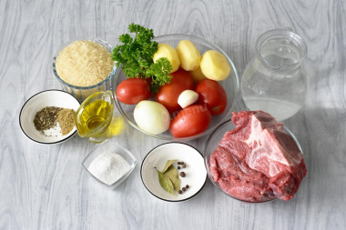
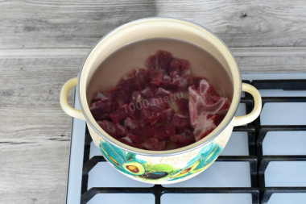
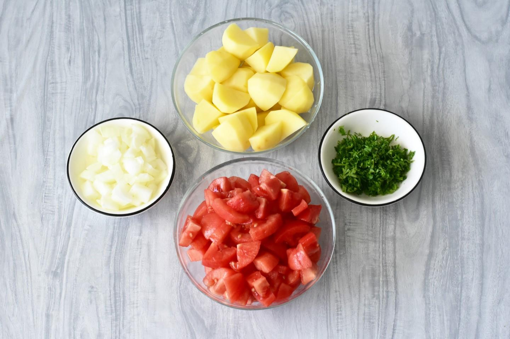
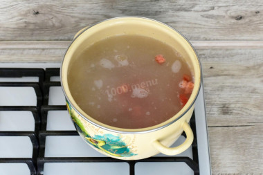
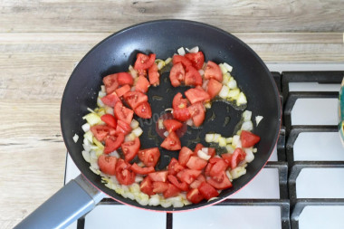
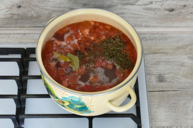
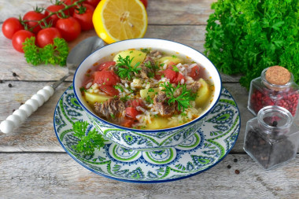

Харчо из говядины с картошкой и помидорами
Описание блюда
Аромат, который соберет всю семью за столом! Харчо из говядины с картошкой и помидорами – это не просто суп, а настоящее путешествие в Грузию. Его фишка – в идеальном балансе наваристого мясного бульона, кислинки от томатов и согревающего аромата специй (хмели-сунели, перец).
Сложность: Средне
Кухня: Грузинская
Ингредиенты
- Вода — 2.5 л
- Говядина (на кости или бедро) — 700 г
- Помидоры (свежие) или томатная паста — 400 г / 3 ст.л.
- Картофель — 300 г (3 средние)
- Рис — 100 г
- Лук репчатый — 150 г (1 большая)
- Чеснок — 3 зубчика
- Петрушка — 20 г
- Лавровый лист — 2 шт.
- Душистый перец — 4–6 шт.
- Перец чёрный (горошком) — 6–8 шт.
- Оливковое масло (или растительное) — 2 ст.л.
- Базилик (сушёный) — 1 ч.л.
- Хмели-сунели — 1.5 ч.л.
- Соль — по вкусу (≈1–1.5 ч.л.)
Рецепт приготовления

Шаг 1
Для начала подготовьте ингредиенты по списку. Говядину можете заменить на другое мясо или птицу. Если используете замороженное мясо, необходимо предварительно правильно его разморозить на нижней полке холодильника. Подробнее о разморозке читайте в статье по ссылке в конце рецепта. Для приготовления лучше использовать нейтральную по вкусу фильтрованную или бутилированную воду.

Шаг 2
Мясо вымойте и нарежьте небольшими кубиками. При наличии кости вырежьте ее. В кастрюлю выложите говядину и кость, если она есть. Влейте воду. Поставьте кастрюлю на сильный огонь и доведите бульон до кипения. Варите мясо под крышкой на медленном огне, снимая пену, примерно 1-1,5 часа. При наличии кости минут через 10 после закипания воду поменяйте, чтобы бульон получился прозрачный. А все секреты вкусного бульона - в материале по ссылке ниже.
Шаг 3
Залейте рис теплой водой в глубокой миске. Оставьте на 20 минут при комнатной температуре. Теплая вода ускоряет набухание риса, сокращая время его приготовления в супе. Крупа впитает часть влаги, что позволит зернам сохранить форму, рис останется слегка упругим. Через 20 минут слейте воду через сито или дуршлаг, слегка прижав рис ложкой, чтобы удалить избыток жидкости. Подробнее о выборе риса и работе с ним читайте по ссылке под шагами.

Шаг 4
Овощи тщательно вымойте под проточной водой с помощью щётки или жесткой мочалки. Картофель очистите и нарежьте небольшими кубиками. Помидоры ошпарьте кипятком и снимите кожицу. Мякоть нарежьте небольшими кусочками. Вместо помидоров можете использовать томатную пасту. Лук нарежьте мелкими кубиками. Чтобы при нарезке лука не раздражалась слизистая, смочите нож и луковицу ледяной водой. Петрушку мелко порубите, чеснок пропустите через пресс или нарежьте.

Шаг 5
В кастрюлю выложите рис, картофель и часть помидоров. Варите примерно 15-20 минут до готовности риса и картошки. О том, как подобрать идеальную кастрюлю для супа, рассчитать количество воды, а также всё о сортах картофеля, - читайте в материалах по ссылкам в конце рецепта.

Шаг 6
В сковороде на среднем огне разогрейте оливковое масло. Выложите лук и обжарьте, помешивая, до прозрачности. Добавьте в сковороду оставшиеся помидоры и тушите все вместе около 5 минут. О том, как подобрать идеальную сковороду и масло для жарки, читайте в статьях, ссылки в конце рецепта.

Шаг 7
Переложите тушеные овощи в кастрюлю. Следом добавьте лавровые листья, сушеный базилик, хмели-сунели, соль и перец. Варите, помешивая, примерно 5-10 минут. В конце добавьте пропущенный через пресс или мелко нарезанный чеснок и рубленую петрушку. Уберите кастрюлю с огня, накройте крышкой и дайте супу настояться около 10 минут.

Шаг 8
Харчо из говядины с картошкой разлейте по тарелкам и подайте к столу. Обязательно подавайте харчо горячим, сразу после приготовления. По желанию дополните блюдо свежей зеленью — мелко нарубленным кинзой и петрушкой, которые добавят яркий вкус и аромат. Отдельно предложите дольки лимона или лайма, чтобы гости могли регулировать кислинку по своему вкусу. Приятного аппетита!